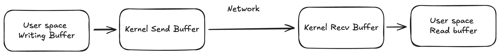

Async Rust with Tokio I/O Streams: Backpressure, Concurrency, and Ergonomics #
Contents
- 1 Async Rust with Tokio IO Streams: Backpressure, Concurrency, and Ergonomics
- 2. I/O loop
- 3. Tokio I/O Patterns
There are many excellent, straightforward guides for getting started with Async Rust and Tokio. Most focus on the core building blocks: Tokio primitives, Rust futures, and concepts such as Pin/Unpin, and often finish with a simple TCP client-server sample. In fact, the typical tutorial example can usually be reduced to something as simple as:
loop {
tokio::select! {
Some(msg) = rx.recv() => {
stream.write_all(&msg).await?;
stream.flush().await?;
}
res = stream.read(&mut read_buf) => {
let n = res?;
if n == 0 {
// EOF - server closed connection
eprintln!("Server closed the connection.");
break; //exit
}
print!("{}", String::from_utf8_lossy(&read_buf[..n]));
}
else => break
}
}
The code above is easy to read, straightforward, and idiomatic.
It uses a Tokio mpsc receiver rx whose incoming messages are written to the I/O stream (the remote peer in TCP terms).
On the other branch of the select!, it reads data into read_buf until reaching the end of file (EOF).
I’m sure you’ve seen many examples that follow exactly this pattern.
But if we think not only about the functionality of the above code, but also about the mechanics and design behind it, some crucial details emerge.
With the loop-select pattern we have concurrent reads and writes.
This means the Tokio runtime scheduler multiplexes them and runs sequentially one after another, and never truly in parallel on two OS threads or CPU cores (assuming the default multithreaded runtime with #[tokio::main]).
All branches of the select! are awaited for readiness and then run one by one in a pseudo-random order, unless the biased; argument is set, in which case they run in the provided order.
In our example, we have two branches:
- read from
rxchannel; - read from the I/O stream.
Async Rust implicitly generates a state machine to make the polling of futures easier. This allows select! to run its branches concurrently. But when we fall inside the first branch and explicitly await inside it, we ask Rust to move the task’s state machine into a state where the only possible wake signal for the task is a wake notification from the write_all() future (or flush() later). The code logic doesn’t allow us to await on write_all()/flush() and read() (from the second branch of the select!) at the same time .
Code written in this way naturally introduces backpressure. This side effect deserves careful attention and a clear understanding.
Backpressure #
If a write() or flush() call becomes blocked for any reason, the entire loop-select is effectively blocked as well, meaning no reads will occur.
This can lead to read starvation and, if the remote peer continues writing, to an inflated receive socket buffer and eventual backpressure on the remote peer side.
Such backpressure can actually be useful when the code should avoid reading more data if it can’t send a timely response. In client-server communication, this makes sense: your server might not want to start processing work, or buffer it in memory, if the client isn’t ready to read the response to its request.
But as usual, there’s no one-size-fits-all solution, it isn’t always the desired behavior. For example, if your code acts as a proxy or bridge, you’ll likely still want to continue draining the reader buffer, because, for example, the decision logic lives outside your module.
Another use case is when producing data doesn’t fully depend on what you read. This often applies on the client side: a client may want to receive the response to a previously sent request as quickly as possible while concurrently sending a new, unrelated one.
More examples are protocols where reads unblock writes, where reads are crucial and should always be handled. For instance, TCP itself is such a protocol. TCP flow control sends window size updates with ACKs to notify the remote peer to continue sending and/or increase the amount of in-flight data. HTTP/2 also has a WINDOW_UPDATE frame used for the same purpose – the consumer controls the producer’s pace.
Experiment #
Let’s run a small experiment to reproduce TCP backpressure and explore a few related GNU/Linux tools.
We can write a TCP server that intentionally blocks its read calls. Also in order to trigger backpressure earlier, server sets its socket receive buffer to the minimum allowed value with setsockopt and SO_RCVBUF (the OS rounds it up to a small default value):
...
let s2 = Socket::from(std_stream);
s2.set_recv_buffer_size(1)?;
...
If server doesn’t read data from buffer, its receive buffer fills up and pushes back on the TCP sender. This effectively simulates slow request processing, for example, when the next request hits a slow database while the previous response is still being flushed to the socket to deliver to the client.
async fn handle_client(mut stream: TcpStream) -> std::io::Result<()> {
println!("start serving");
let mut i = 0;
loop {
// Don't read any data to emulate backpressure.
// let mut buf = [0u8; 1024];
// let n = stream.read(&mut buf).await?;
// if n == 0 {
// break;
// }
// println!("Received {n} bytes");
i += 1;
sleep(Duration::from_millis(10)).await;
stream
.write_all(format!("message from server: {i}\n").as_bytes())
.await?;
stream.flush().await?;
println!("written: {i}");
}
}
The full code can be found on github.
And run it:
$ cargo run --bin 1_server_recvbuf_set
In the other console window run the client:
$ cargo run --bin 1_client_simple
As you can see from the output logs, the client stops reading from the server even while the server keeps writing. Packets pile up in the client’s receive buffer, eventually filling it and forcing TCP to apply backpressure in the opposite direction.
In the tcpdump output you can see the server on port 8080 sending a zero-window (win 0) ACKs, notifying the client that its receive buffer is full.
$ sudo tcpdump -i any -n -s0 port 8080
...
21:36:00.095027 lo In IP 127.0.0.1.8080 > 127.0.0.1.58090: Flags [P.], seq 5668:5693, ack 102401, win 0, options [nop,nop,TS val 2038288450 ecr 2038288438], length 25: HTTP
...
The ss can help us too to find the stalled send buffer:
$ ss -tan | grep 127.0.0.1:58090
State Recv-Q Send-Q Local Address:Port Peer Address:Port
ESTAB 102400 0 127.0.0.1:8080 127.0.0.1:58090
ESTAB 869937 2628271 127.0.0.1:58090 127.0.0.1:8080
In simplified terms, the TCP connection behaves like a network of queues. Congestion control and flow control cooperate to size those queues, balance throughput, and protect each endpoint from overload.
Usually write calls to a socket complete almost instantly (0.5-5 µs depending on size) because they land in memory (userspace buffers such as BufWriter or the kernel’s TCP send buffer) without waiting for remote acknowledgements.
This asynchronous nature of writes can hide subtle problems: background write failures, timeouts, and uncertainty of delivery often surface only under congestion. In our toy setup, small writes and generous buffers mask pending backpressure.
Note:
A useful per-socket/system-wide setting to improve responsiveness and backpressure behavior is
TCP_NOTSENT_LOWAT. Cloudflare has a good write-up.
Cancellation #
Another interesting part of the code is how to perform cancellation while backpressure is applied. We might need to stop processing for many reasons: restart, upstream/downstream abort, timeouts, or simply because the caller no longer needs the result.
In the code above, simply adding a cancellation branch to select! will not work if the task is blocked on write_all():
let cancel = CancellationToken::new();
loop {
tokio::select! {
Some(msg) = rx.recv() => {
stream.write_all(&msg).await?;
stream.flush().await?;
println!("client's written");
}
res = stream.read(&mut read_buf) => {
let n = res?;
if n == 0 {
// EOF - server closed connection
eprintln!("Server closed the connection.");
break; //exit
}
print!("{}", String::from_utf8_lossy(&read_buf[..n]));
}
_ = cancel.cancelled() => break, // <---------------- cancellation
else => break
}
}
At that point the state machine awaits only write_all(), remaining stuck in Poll::Pending inside the first branch.
The first idea is to apply the cancellation token through every await calls:
let cancel = CancellationToken::new();
loop {
tokio::select! {
Some(msg) = rx.recv() => {
tokio::select! {
res = stream.write_all(&msg) => res,
_ = cancel.cancelled() => break
}?;
tokio::select! {
res = stream.flush() => res,
_ = cancel.cancelled() => break
}?;
println!("client's written");
}
res = stream.read(&mut read_buf) => {
let n = res?;
if n == 0 {
// EOF - server closed connection
eprintln!("Server closed the connection.");
break; //exit
}
print!("{}", String::from_utf8_lossy(&read_buf[..n]));
}
_ = cancel.cancelled() => break,
else => break
}
}
This works, but it scales poorly: every new await point needs another nested select!, and readability drops fast.
Later in the post I’ll show a tidier cancellation pattern, especially if you need a simple “short-circuit” solution.
Read next chapter →